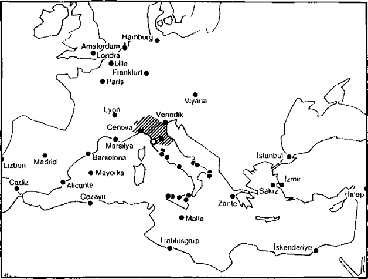

Bir önceki paragrafta, yalnızca ekonomik zorlama ve kuralların rolünü görmek üzere, tüccarı unuttuk. Onu izleyen paragrafta, pazarları kendi hallerinde incelemek üzere -kapladıkları alan, hacimleri, ağırlıkları, kısacası geriye dönük coğrafyaları- gene unutacağız. Çünkü her mübadele bir mekânı kapsamaktadır ve hiçbir mekân tarafsız değildir, yani insan tarafından değiştirilmiş ve örgütlenmiştir.
Tarihsel açıdan konuşurken, demek ki bir firmanın, ticari bir piyasanın, bir ulusun egemen olduğu veya buğday, tuz, şeker, karabiber, hatta değerli madenler gibi belli bir trafikle meşgul olan değişken mekân resmetmek yararlıdır. Bu, pazar ekonomisinin belli bir mekân boyunca, boşluklarının, sıklıkla ortaya çıkan yetersizliklerinin ve bundan hiç de az olmayan, sürekli dinamizmlerinin yansımasını ortaya çıkartmanın bir biçimidir.
Bir tüccar her zaman alıcılar, mal sağlayıcıları, borçlular, alacaklılarla ilişki halindedir. Bu ajanların ikâmet yerlerini bir haritaya aktarırsanız, bütünü bizzat tüccarı hayatına hükmeden bir mekân resmolacaktır. Bu mekân ne kadar genişse, söz konusu tüccar, ilke olarak ve fiili durumda da, hemen hemen her zaman o kadar önemli olmaktadır.
Fransa’ya yerleşmiş olan Floransak tüccar Gianfigliazzi tarafından XIII. yüzyılın ikinci yarısında girişilen işlerin alanı, Alpleri, her şeyden önce Dauphine’yi, Rhone vadisini kapsamakta, batıda Montpellier ve Carcassonne’a kadar etki etmektedir. Üç yüzyıl sonra, 1559’a doğru, Anversli Capponiler -dünyaca ünlü ve önemli büyük Toskanalı aileden-, mektuplarına ve sicillerine göre, Kuzey denizinden, Piza ve Floransa’da Akdeniz’e kadar uzanan ve güneye doğru dallanıp budaklanan uzun ve dar bir alan içinde iş görmekteydiler. Gene buna benzeyen bir alan. Alçak Ülkeler’den İtalya’ya kadar uzanarak, XVI. yüzyılda Pizalı Salviatilerin faaliyetlerini kapsamış ve onlar hükmetmiştir; bu ailenin anıtsal arşivleri hâlâ araştırılmamış olarak durmaktadırlar. XVII. yüzyılda İtalyan ticaret ağları, Akdeniz’in tümüne yayılma eğilimindedirler, ama aynı zamanda Kuzey’deki egemenliklerini kaybetmektedirler. İşlerinin eksenini Livorno’da kurmuş olan Toskanalı Saminiati firmasının bir “commessioni e ordini" (1652-1658) sicili, esas olarak Akdenizli bir ağı gözler önüne sermektedir: Venedik, İzmir, Trablusşam, Messina, Cenova ve Marsilya burada önde gelmektedirler; İstanbul, İskenderun, Palermo, Cezayir sıklıkla gündeme gelmektedir. Kuzeye doğru bağlantı noktaları, Lyon ve özellikle de Amsterdam’dır. Kullanılan gemiler, çoğu zaman Hollanda veya İngiliz bandıralıdır. Fakat Livorno Livorno’dur ve firmamızın sicil dökümleri arasında, Arhangelsk’ten Rus kızıl derilerini yükleyen iki gemi bulunmaktadır. Kuralı teyid eden istisna!
Eğer bu türden yüzlerce ve binlerce sicile sahip olunsaydı, ticari mekâna ve firmaların alanına ilişkin yararlı bir tipoloji, kendiliğinden açığa çıkardı. Atımların mekânı ile satışların mekânını birbirlerinin karşısına koymak, bunları birbirleriyle açıklamak, benzeyenleri ve farklılaşanları ayırmak öğrenilebilirdi. Uygulamada doğrusal olan ve esas bir eksen üzerinde yoğunlaşmanın görüntüsüne benzeyen dar ve uzun biçimli mekânı ve atılım ile kolay mübadele dönemlerine denk düşen, geniş ölçekli çemberi farketmek de mümkün olabilirdi. Tüccarın büyük bir ticari piyasanın alanına sağlam bir şekilde katılmasından itibaren, ikinci veya üçüncü örnekte başarıya ulaştığından -bu kendiliğinden olmaktadır- artık kuşku duyulmayacaktır. XV. yüzyılda yaşamış olan Raguzalı Cotrugli, bunu daha o sıralar söylemiştir: “Büyük balıklar büyük göllerde yakalanır”. Eric Maschke’nin, işe başladığı zaman çok sıkıntı çeken ve hayatını ancak Venediğe ulaştığı günden itibaren dengelemeye başlayabilen, Augsburglu şu tüccar ve kronikçiye ilişkin olarak anlattığı öyküyü de severim. Aynı şekilde, Fuggerlerin talihinin iki karakterisitk tarihi, Eylül 1367 -Hans Fugger doğduğu köy olan Graben’dan ayrılarak, fistan (barchent) dokumacısı olarak ailesiyle birlikte yerleşeceği Augsburg’a gitmiştir-, ve 1442’dir: mirasçıları uzak mesafe tüccarı olmuşlar ve komşu kentler ve Venedik’le ilişki halindedirler. Bunlar yüzlerce kere tekrarlanan, sıradan olaylardır. Fedcrigo Melis, Piza cantado’su kökenli olan Bonomeilerin örneğini zikretmektedir “die alla f ine del secolo XV si Milanesizza- rono”, “Milanolu olmuşlar” ve bu sayede başarıya ulaşmışlardır.

SAMINIATI FİRMASININ XVII. YÜZYILDAKİ TİCARİ İLİŞKİLERİ
Onlara ilişkin birçok belgenin in extremis Armando Sapori tarafından kurtarıldığı ve BocconVde (Milano) saklandığı, Florama ve Livomo’da yerleşik Saminiti firması. Taralı alan (kuzey ve orta İtalya) firmanın sıkı ilişkilerine tekâbül etmektedir. Firma Akdeniz'in tümünde mevcuttur, Ca- diz’de, Lizbon’da ve Kuzey'de de (Paris, Lyon, Main-üzeri-Frankfurt, Lille, Londra, Amsterdam, Hamburg ve Viyana) vardır. Harita M. C. Lapeyre tarafından çizilmiştir.
Bir tüccarın alanı, belli bir dönemdeki ulusal veya uluslararası alanın bir parçasıdır. Eğer dönem atlımın damgasını yemişse, tüccarın iş gördüğü ticari mekân hızla yuvarlaklaşma eğilimindedir, özellikle de büyük iş dünyasına, kambiyo senedine, paralara, değerli madenlere, “krali mallar”a (karabiber, baharat, ipek) veya, örneğin fistan üreticileri için gerekli olan Suriye pamuğu aracılığıyla modaya bulaşmışsa. Floransa arşivleri Datini de Prato’nun çok yetersiz bir gözden geçirilmesinden sonra, 1400’lere doğru en büyük işin, Floransa’dan Cenova’ya, Montpellier’ye, Barselona’ya, Bruges’e, Venediğe yönelik kambiyo senedi akımı olduğu izlenimini edindim. XIV. yüzyılın sonunda ve XV. yüzyılın ilk yıllarında, mali alan acaba, bir başkasından daha erkenci ve daha geniş mi olmaktadır?
Eğer, ileri sürdüğüm gibi, XVI. yüzyıl ilerlemesi, çok faal fuar ve piyasa üst yapısına ulaşıyorsa, Augsburglu Fuggerlerin ve Welserlerin çoklu işlerinin yerleştiği alanın ani genişlemesi daha iyi anlaşılacaktır. Bunlar, yüzyılın ölçeğinde muazzam girişimlerdir ve diğer tüccarlarla, kamuoyu nezdinde, bizatihi bu genişliklerinden ötürü korku yaratmaktadırlar. Augsburglu Welserler Avrupa’nın tümünde, Akdeniz’de, Yeni Dünya’da, İspanyol kurnazlığının ve korkunç yerel vahşetlerin 1528’de onları bilinen başarısızlığa götürdüğü Venezuala’dadırlar. Fakat bu Welserler, risk alınması gereken, kazanılacak veya kaybedilecek servetlerin bulunduğu heryerde, keyifli bir şekilde bulunmakta değiller midir? Onlardan yüz kere daha makul olan Fuggerler, daha geniş ve aynı zamanda daha sağlam bir başarıyı temsil etmektedirler. Macaristan, Bohemya ve Alplerde yer alan, Orta Avrupa’nın en büyük maden girişimlerinin efendileridir. Temsilcileri aracılığıyla, Venediğe sağlam bir şekilde yerleşmişlerdir. XVI. yüzyılın başında dünyanın hayat dolu merkezi olan Anvers’e egemendirler. Cok erkenden, Lizbon’da ve V. Carlos’a yanaştıkları İspanya’dadırlar; 153l’de Şili’dedirler, ama buradan 1535’te oldukça çabuk ayrılmışlardır. 1559’da Fiume’de (Rijeka) ve Dubrovnik’te Akdeniz’e kişisel bir pencere açmışlardır. XVI. yüzyılın sonunda, muazzam güçlüklerle karşı karşıyayken, Lizbon’daki uluslararası karabiber ortaklığına, bir an için katılmışlardır. Nihayet, vatandaşları olan Ferdinand Cron’un aracılığıyla Hindistan’dadırlar. Cron bu ülkeye 1587’de, 28 yaşındayken gelmiştir ve Cochin, sonra da Goa’da Fuggerleri ve Welserleri temsil edecektir. Bu ülkede 1619’a kadar kalacak, çok büyük bir servet edinmeye yetecek, uzak İspanya’daki efendilerine ve hemen oradaki Portekizli efendilerine birçok hizmette bulunacak kadar zamanı olacaktır. 1619’dan sonra Portekizlilerin nankörlüğünü, hapishaneleri ve eşitsizliği tanıyacaktır. Kısacası, muazzam firmanın imparatorluğu, bilindiği üzere, üzerinde güneş batmayan V. Carlos ve II. Felipe’nin imparatorluğundan daha geniş idi.
Fakat en anlamlı olanlar bu devler, tarihin tıkanıklık yaratan bu kişileri değildir. Bizi asıl ilgilendiren ortalamalar, yani farklı büyüklükteki firmalar ve onların bütünsel değişimleridir. XVII. yüzyılda bunların ortalama büyüklükleri azalıyora benzemekledir. XVIII. yüzyılda yeniden büyümektedir: finans Avrupa’nın, hatta dünyanın sınırlarına ulaşmaktadır. Çok zenginlerin enternasyonali, hiçbir zaman olmadığı kadar yerleşik hale gelmiştir. Fakat bu şemanın doğrulamasını sağlamak üzere, örnekleri ve karşılaştırmaları artırmak gerekir. Koskoca bir özenli çalışma, yapılmayı beklemektedir.
Bir kent, birbirlerine bağlanmış mekânların merkezindedir: iaşesini sağladığı çember; parasını kullananların çemberi; ağırlık birimleri ve ölçülerini kullananların çemberi; ona zenaatkârların ve yeni burjuvaların geldiği çember; kredi işlerinin çemberi (bu en geniş çemberdir); alım ve satışlarının çemberi; ona doğru gelen veya ondan çıkan haberlerin, birbirlerinin içine girmiş çemberleri vardır. Kent tıpkı tüccarın dükkânı veya deposu gibi, konumunun, talihinin, aşmakta olduğu uzun konjonktürün ona sağladığı ekonomik mekânı işgâl etmektedir. Her anda, kendini, onu çevreleyen çemberlerle tanımlamaktadır. Fakat bunların mesajını yorumlamak gerekmektedir.
Aynı kentten Lorenz Meder’in Handelbusch’unu yayınladığı yıl olan 1558’de, Nuremberg kenti, işte böyle bir tanıklık yapmaktadır. Hermann Kellenbenz’in yakınlarda yeniden yayınlayıp, şerhettiği bu ticaret kitabında, Lorenz Meder yurttaşlarına pratik tavsiyelerde bulunmak için ortaya çıkmaktadır. Bu kitap bizi geriye doğru ilgilendiren sorunu çözmemekte, yani Nuremberg’in ticari mekânlarının dökümünü ve doğru yorumunu getirmemektedir. Ama kitabın Hermann Kellenbenz tarafından tamamlanan işaretleri, veri bakımından oldukça zengin olan, izleyen haritanın çizilmesine olanak vermiştir. Bu harita kendiliğinden konuşmaktadır. İlk atılımını yaşamakta olan, endüstriyel, ticari, mali kent Nuremberg, XVI. yüzyılın bu ikinci üçte birlik kesiminde, birkaç onyıl önce Almanya’yı Avrupa faaliyetinin sürükleyicilerinden biri haline getirmiş olan atılım tarafından taşınmaktadır. Demek ki Nuremberg, geniş çaplı bir ekonomiye bağlanmakta ve uzağa taşınan ürünleri, Yakın Doğu, Hindler, Afrika ve Yeni Dünya’ya kadar gitmektedirler. Fakat faaliyetleri Avrupa mekânının içinde kalmaktadır. Trafiklerinin merkezi kesimi, kabaca Almanya ölçeğinde yayılmıştır ve bunu kısa veya orta çaplı bağlantılarla sağlamaktadır. Venedik, Lyon, Medino del Campo, Lizbon, Anvers, Krakow, Breslau, Pozen, Varşova onun menzilleri ve uzak mesafeli faaliyetinin sınırlarıdır; yani şu veya bu şekilde elinin ulaşabildiği piyasalar.
Johannes Müller, Nuremberg’in, XVI. yüzyılın ilk yarısında, Avrupa’nın faal hayatının geometrik merkezi gibi olduğunu göstermiştir. Burada, yerel yurtseverliğin aşırıya kaçması söz konusu değildir. Ama neden böyle olmuştur? Herhalde kara taşımacılığı faaliyetlerinin artmasından. Aynı zamanda, Nuremberg’in Venedik ile Anvers’in ortasında, eski mekân Akdeniz ile, Avrupa talihinin yeni mekânı olan Atlantigin (ve ona bağımlı olan denizlerin) yarı yolunda yer almasından da. Venedik-Anvers ekseni, XVI. yüzyıl boyunca, kuşkusuz Avrupa’nın en faal “kıstağı” olarak kalmaya devam etmiştir. Alplerin bu kıstağın ortasında dikildikleri doğrudur, ama buraları taşımacılığa ilişkin olarak, sürekli bir mucizeye sahne olmaktadırlar; sanki güçlükler diğerlerinden daha üstün bir iletişim sistemi yaratmışçasına. Demek ki, karabiberin XVI. yüzyılın sonunda Nuremberg’e, Anvers’den olduğu kadar, Venedik’ten de geliyor olması karşısında, ölçüsüz bir şaşkınlığa düşmeyelim. Güney ve Kuzey karabiberi o kadar eşit bir noktadadırlar ki, bu mal Anvers’den Venediğe veya Venedik’ten Anvers’e hiç duraklamadan gidebilir; denizden ve karadan.
Tabii ki burada söz konusu olan, belli bir dönemdeki Alman ekonomisinin konumudur. Uzun dönemde, bir terazi hareketi, ülkenin en karasal kesimi olan Doğu Almanya lehine etki etmektedir. Doğu’nun bu yükselişi, XVI. yüzyıldan itibaren, özellikle de 1570’den sonra Nuremberg ve Augsburg’daki iflaslar tarafından, Leipzig ve fuarlarının yükselişi tarafından somutlaştırılmaktadır. Leipzig kendini Alman madenlerine dayatmayı, en önemli pazar olan Kuxen’i kendi evinde toplamayı, Magdeburg menzilinden kurtularak, Hamburg ve Baltık’la doğrudan bağlantı kurmayı başarmıştır. Fakat Venediğe aynı şekilde, güçlü bir tarzda bağlı kalmayı sürdürmektedir; “Venedik malları” bu kentin faaliyetlerinin tüm bir kesimini denetlemektedirler. Ayrıca bu kent, Doğu ile Batı arasındaki mal transitinin en mükemmelinden merkezi olmaktadır. Bu atılım, yılların geçmesiyle kendini kanıtlamaktadır. 1710’da Leipzig fuarlarının en azından mal alanında, Main-üzeri-Frankfurt fuarlarından “weit importanter und considerabler” oldukları iddia edilebilir, çünkü Main üzerindeki kent bu dönemde, Leipzig’den daha üstün mali bir merkez olarak kalmaya devam etmektedir. Para ayrıcalıkları uzun ömürlüdürler.
Görüldüğü üzere, kentsel mekânları yorumlamak zordur, üstelik belgeler taleplerimize hiç de cevap vermemektedirler. Jean-Claude Perrot’nun yeni yayınlanan çok zengin kitabı, Modern bir kentin oluşumu, XVIII. yüzyılda Caen (1975) bile, örnek bir özen ve akılla incelediği tüm sorunları çözememiştir. Von Thünen’in şemasının Caen için geçerli olmasına şaşırmamak gerekir: kentin çevresinde, ona eklenmiş olan, hatta onun üzerine taşan “bir bostan ve mandıra” alanını, sonra da bir tahıl bölgesini ve bir de hayvancılık kesimini saptamak kolaydır. Fakat daha o sıralarda bile, kent tarafından imal edilen endüstriyel ürünlerin yayılma alanlarını ve bunların dağıtıldıkları pazar ve fuarları farketmek çok daha zor olacaktır. En anlamlısı, kentin uygulamak zorunda olduğu, bölgesel mekân ile uluslararası mekânın çifte oyunu değil midir; yani farklı iki dolaşım? Bunlardan birincisi kılcal, kısa mesafeli, süreklidir;
İkincisi ise kesintilidir ve gıda bunalımı durumlarında Seine üzerinden nehir taşımacılığını veya Londra ile Amsterdam’dan itibaren deniz trafiğini hizmete sokmak durumundadır. Bu iki sistem birbirlerine uymakta, zıtlaşmakta veya birbirlerine eklenmekte, veyahut da birbirlerini izlemektedirler. Uluslararası hayatın bir kente nasıl temas ettiği, ve bazen de, bundan fazla olmak üzere, yakınlarıyla olan bağlantı sıklığı onu nitelemektedir. Genel tarih yerel tarihin üstünden aşmaktadır.
Fernand Maurette’in 1920’li yılların dünyası için kaleme aldığı klasik elkitabım örnek alarak, XV.-XVIII. yüzyıllar arasındaki büyük hammadde pazarlarının tarihini, fazla bir zorluk olmadan yazabiliriz. Eğer bilgece davranarak, yalnızca anlamlı örneklere dayanmak istersek, sadece seçme sıkıntısıyla karşılaşırız: geniş sürümü olan bütün mallar, kendilerini tanık olarak sunmaktadırlar ve bunların tanıklıkları çok farklı olmakla birlikte, en azından bir noktada birleşmektedirler: tıpkı en faal kentler ve tıpkı en fazla itibar gören mallar gibi, bu trafiklerin en parlakları olanları muazzam mekânları kapsamaktadırlar. Genişlik, zenginliğin ve başarının inatçı işaretidir. Baharat örneği -“yemeklerin lezzetini artırmaya” yarayanlarından, “tıbbi ürünlere (ve kumaşların boyanması için gereken malzemeye kadar)" “şaşırtıcı bir ürün çeşitliliğini kapsayan" kelime- o kadar bilinmektedir ve klasik olmuştur ki, onu bir model olarak önermekte tereddüt edilmektedir. Avantajı, bir uzun süre atılımını, ona bağlanan dönemlerle birlikte ve XVII. yüzyılda aşikâr bir geri çekilmeyi göstermek olabilirdi. Ama bunu daha önce açıkladık. Bunun tersine şeker, nisbeten yeni bir üründür ve XV. yüzyıldan XX. yüzyıla kadar, tüketim ve dağıtım alanının hızlı bir ritmle genişletmeye ara vermemiştir. Birkaç minik istisna bir yana bırakılacak olursa (akağaç şurubu, mısır şekeri), değerli ürün kıta ablukası dönemine ve şeker pancarının kullanımına kadar, şeker kamışından üretilmiştir. Daha önce gösterdiğimiz üzere, bu bitki Hind’den Akdeniz’e ve Atlantiğe doğru gitmiştir (Madera, Kanarya adaları, Azor adaları, Sao Tome, Prens adası, sonra Amerikan kıyısının tropikal kıyıları, Brezilya, Amiller...). Bu ilerleme çağın koşullarına göre, maliyetli yatırımlar gerektirmesi nedeniyle, daha da dikkat çekici hale gelmektedir.
Öte yandan, eskiden olduğu gibi, eczacının malzemeleri arasındaki yerini koruyan şeker, giderek mutfaklara ve sofralara daha fazla ulaşmaktadır. XV. ve XVI. yüzyılda, henüz çok büyük lüks olup, hükümdarlara hediye edilmektedir. 18 Ekim 1513’te Portekiz kralı, papaya, bir şekerci tarafından yapılmış olan doğal büyüklükteki ve 12 kardinal ile her biri 1,5 metre boyunda olan 300 mumla çevrelenmiş heykelini sunmuştur. Fakat daha o sıralarda bile talihinin parlaklığı belli olan şeker tüketimi, ilerleme kaydetmektedir. 1544’de Almanya’da sıklıkla “zucher verderbt keine speis" denilmektedir, şeker hiçbir yemeği bozmaz. Brezilya teslimatlarına başlamıştır: XVI. yüzyılda yılda ortalama 1600 ton. 1676’da, ortalama 180 ton şeker yükleyen 400 gemi (72.000 ton) Jamaika’dan ayrılmaktadır. XVIII. yüzyılda Santo Domingo, eğer daha fazla değilse, en azından bir o kadar üretecektir.
Ama Atlantik şekeriyle boğazına kadar dolu bir Avrupa piyasası hayal etmeyelim. Ne de Avrupa’nın artan modernitesine asılarak, bir ilk Okyanus atılımın nedeni olarak, bir şeker atılımını hayal edelim. Zaten bu ilkel determinizm, kolaylıkla tersine çevrilebilir: tutkusunun da yardımıyla, şekerin tıpkı kahve gibi atılım yapmasına yol açan, Avrupa’nın gelişmesi değil midir?
Geniş şeker tarihinin unsurlarının, bir parçanın arkasından diğeri gelmek üzere, nasıl oluştuğunu burada incelemek olanaksızdır: zenci köleler, plantasyon sahipleri, üretim teknikleri, ham şekerin tasfiyesi, kendilerini besleyemeyen plantasyonların ucuz yiyecekle iaşe edilmesi; nihayet deniz bağlantıları, Avrupa’daki depolar ve satışlar. 1760’lara doğru her şey düzene girdiğinde, Paris piyasasında şekerler arzedilmektedir: “moscouadelar, cassonadelar, yedi librelik şeker, kral şekeri, yarı-kral şekeri, nöbet şekeri, Kıbrıs şekeri de denilen kırmızı şeker. İyi moscouade beyaz, olabildiğince az yağlı olmalı ve hiç yanık kokmamalıdır. Adalar şekeri de denilen cassonade'ın beyaz, kuru, pütürlü, menekşe rengi ve tadında olanı seçilmelidir. En güzeli Brezilya’dan gelmektedir, ama bunun ticareti hemen hemen bitmiştir; Cayenne’den geleni ikinci sıradadır, adalarınki ise reçel halindedir; bu reçeller en güzelleri olduğu için, saf şekeri daha az yapmaktadırlar... ve bunlar billurlaşmaya daha az konu olmaktadır”. Bu dönemde şekerin nadir olma prestijini kaybettiği kesindir. Bakkal ve şekerci malzemesi olmuştur.
Fakat bizi burada ilgilendiren, biraz daha yukarıdan tanıdığımız şeker deneylerinin, iş adamları için ne ifade ettiğidir. Ve her şeyden önce, şeker Akdeniz’deki kariyerinin başından itibaren, mükemmel bir iş alanı olarak ortaya çıkmıştır. Bu konuda Venedik ile Kıbrıs şekerinin örneği açıktır, çünkü bu şeker Corner ailesinin -“şeker kralı”- boşuna tartışılan bir tekeli olarak ortaya çıkmaktadır. Venedik 1479’da Kıbrıs’ı zaptettiğinde, bir şeker savaşını kazanmıştır.
Cornerlerin şeker girişimi konusundaki bilgilerimiz yetersizdir. Fakat bilinen başka örnekler, a priori şaşırtmayacak olan bir izlenim bırakmaktadırlar: şeker üretim sürecindeki birbirini izleyen aşamalar, hiçbir zaman büyük kâr alanları olmamışlardır. Sicilya’da XV. ve XVI. yüzyıllarda, Ceneviz sermayesi tarafından desteklenen şeker değirmenleri vasat, hatta kötü iş alanları olarak belirlemektedirler. Aynı şekilde, Atlantik adalarında, XVI. yüzyıldaki şeker boom’u, büyük kârlar yaratabilmiştir, fakat, büyük kapitalistler olan Welserler 1509’da Kanarya adalarında toprak satın alıp, orada şeker plantasyonları oluşturduklannda, girişimi yeteri kadar verimli bulmayarak, 1520’de işi bırakmışlardır. Brezilya plantasyonları için XVI. yüzyıldaki durum aynıdır; bunlar plantasyon sahibini, senhor de engenho’yu yaşatmaktadırlar, ama çok zengin bir şekilde değil. Rekor üretimine rağmen, Santo Domingo’da da izlenim farklı değildir. Acaba, bu tartışmaya yer bırakmayan nedenden ötürü mü, üretim köle emeğinin düşük düzlemine doğru sürüklenmiştir? Ancak burada dengesini bulmakta, bulabilmektedir.
Fakat farkına varış daha uzağa gitmektedir. Her kapitalist pazarın birbirini izleyen halkaları vardır, ve merkezine doğru, diğerlerinden daha yüksek ve daha fazla gelir getiren bir noktası bulunmaktadır. Örneğin karabiber ticaretinde, bu yüksek nokta uzun süre Fondaco dei Tedeschi olacaktır: Venedik karabiberi burada yığılmakta, sonra büyük Alman alıcılarına doğru yola çıkmaktadır. XVII. yüzyılda karabiberin merkezi, Oost Indische Companie’nin geniş ambarlarıdır. Avrupa mübadelesinin zincir halkaları içine tamamen alınmış olan şeker için bağlantılar daha karmaşıktır, çünkü ticaretin yüksek noktasını tutabilmek için, üretimi de elde tutmak gerekmektedir. Atlantik şekeri büyük önemini ancak, XVII. yüzyılın ikinci yansında elde edecek ve Amillerin çeşitli adalarında farklı atılım tarihleri olacaktır. 1654’te Brezilya’nın kuzeydoğusunu kaybeden Hollandalılar, İngiliz ve Fransız üretiminin belirleyici ilerlemelerinin daha da ağırlaştıracağı bir başarısızlıkla karşılaşmışlardır. Kısacası, üretimin paylaşılması, sonra da tasfiyenin paylaşılması (esas işlem) ve nihayet pazarın paylaşılması söz konusudur.
Egemen bir şeker piyasasının ancak taslakları olacaktır: 1550’lere doğru 19 şeker tasfiyehanesine sahip olan Anvers’de; 1585’te Anvers piyasasının başaşağı gitmesinden sonra Amsterdam’da. Amsterdam 1614’te, tasfiyehanelerde, havayı ağırlaştıran odun kömürünün kullanılmasını yasaklamak zorunda kalacaktır; ancak bu tasfiyehanelerin artışı durmamaktadır: 1650’de 40, 1661’de 61. Fakat en mükemmelinden merkantilizm dönemi olan bu yüzyılda, ulusal ekonomiler kendilerini savunmakta, kendi pazarlarını yalnızca kendilerine tahsis etmeyi başarmaktadırlar. Örneğin, Colbert’in ulusal pazarı 1665 tarifeleriyle koruduğu Fransa’da, Dunkerque, Nantes, Bordeaux, La Rochelle, Marsilya, Orleans’da tasfiyehaneler gelişmeye başlamıştır. Bu durumun sonucu olarak, 1670’ten itibaren, dışarıda tasfiye edilmiş şeker Fransa’ya girememektedir; tersine, tasfiye edilmiş olarak yeniden ihraç edilmek üzere ithal edilen ham şekerlere, ülkeye girişte uygulanmaya başlayan vergi indirimi sayesinde, bir cins ihracat priminden yararlanan Fransız şekeri ihraç edilmektedir. Fransız ihracatını teşvik eden bir unsur da, ulusal tüketimin düşük olmasıdır (İngiltere’deki 9/10 oranına karşılık, koloni üretiminin 1/10’u); ayrıca plantasyonlara anavatandan gönderilen iaşe, Kuzey Amerika’nın katkısına rağmen, özellikle İngiltere tarafından iaşe edilen Jamaika’dakine nazaran daha ucuzdur (Fransız fiyatlarının düşük düzeyinden ötürü). “Savaştan önce (sonradan Yedi Yıl Savaşı denilecek olanı), İngiliz sömürgeleri şekeri Londra’da, Fransız sömürgelerinden gelen şekerin Fransız limanlarında sahip olduğu fiyattan (aynı kalitede olanlar için) % 70 daha fazla idi". Journal de Commerce böyle yazmaktadır. Bu aşırı fiyat farkının tek nedeni, İngiltere’nin sömürgelerine sağladığı erzakın yüksek fiyatından başka bir şey olamazdı ve İngiltere bu fiyattan olan şeker fazlasını ne yapabilirdi? Tabii ki onları ancak kendi tüketebilirdi. Çünkü eklemek gerekir ki, İngiliz piyasası çoktan bunu yapabilecek düzeye gelmiştir.
Büyük üretici ülkeleri ithalat ve yeniden satışlarına rağmen, ham şeker alımı ve tasfiyehane kurma yoluyla, şeker pazarlarının ulusallaştırılması, Avrupa ölçeğinde her halükârda yayılmıştır. Hamburg, Hollanda’nın içine düştüğü zorluklardan yararlanarak, 1672’den itibaren tasfiyehanelerini geliştirmekte ve sırrını saklamaya özen gösterdiği yeni usuller geliştirmektedir. Ve Prusya, Avusturya ile Rusya’ya varana kadar şeker tasfiyehaneleri kurulacak, sonuncu ülkede bunlar devlet tekeli olacaklardır. Şeker piyasalarının hareketlerini ve geçerli kâr noktalarını tam olarak bilebilmek için, demek ki üretici bölgeler, üretime egemen olan para piyasaları, toptan dağıtımı kısmen denetleme aracı olan tasfiyehaneler arasındaki karmaşık ağı yeniden oluşturmak gerekmektedir. Bu “manüfaktür”lerin altında, sayılamayacak kadar çok perakendeci dükkânı bizi pazarın sıradan düzlemine ve kesin bir rekabete maruz kalan mütevazi kârlarına doğru götürmektedir.
Ağın bütünü içinde, yüksek noktayı veya noktalan, kârlı halkaları nereye yerleştirmek gerekir? Londra örneğinden hareketle, tasfiyeci, şekerci veya sıradan tüketici olmalarına göre beyaz veya esmer (melas) şeker alıcılarının karşısında yer alan şeker varil ve sandıklarının yığıldığı ambarların yakınındaki toptancı piyasa aşamasında olduğunu rahatlıkla söyleyebilirim. Sömürge sahibi ülkelerin anavatanlarındaki tasfiyehanelere ayrılmış olan beyaz şeker imalatı, ilk önlemlere rağmen, sonunda adalara da yerleşmiştir. Fakat bu endüstriyel çaba, üretici adaların yaşamakta oldukları güçlüklerin bir işareti değil midir? Toptancı piyasasındaki anahtar konumu, bize göre, büyük tüccarları cezbetmemişe benzeyen, tasfiyehanelerden sonra yer almaktadır. Fakat bundan emin olabilmek için, toptancı ile tasfiyeci arasındaki ilişkileri bilmek gerekir.
Zaten tekrar döneceğimiz bir konu olan şekeri bir yana bırakalım. Elimizin altında daha iyisi var: gezegenin tümünü gündeme getiren, bizi mübadelelerin en yüksek noktasına taşıyan, ekonomik hayatın bu sonsuz olarak yeniden ele alınan hiyerarşik durumunu gerektiğinde işaret edecek olan kendi üstündeki macera ve rekorları yaratmaya çalışan değerli madenler. Heryerde hazır ve nazır olan, her zaman istenen, dünyayı dolaşan bu mal konusunda, bir arz ile bir talep her zaman karşılaşmaktadır.
Fakat kaleme kolayca geliveren “değerli madenler” deyimi, gözüktüğünden daha az basittir. Farklı nesneleri işaret etmektedir:
Değerli maden bu çeşitli biçimler altında hareket etmeye hiç ara vermemekte ve bunu hızlı yapmaktadır. Daha o sıralarda, Boisguilbert paranın ancak “sürekli bir hareket halinde olması” durumunda yararlı olabileceğini söylemekteydi. Gerçekten de, para dur durak tanımadan dolaşmaktadır. Cantillon “hiçbir şey ondan daha kolay ve daha az fireyle taşınamaz” diye işaret etmekteydi. J. Schumpeter’e göre, Cantillon paranın dolaşım hızından sözeden ilk kişidir, ama bu tartışmalıdır. Bu hız öylesinedir ki, bazen külçe ile sikke arasındaki, birbirini izleyen işlemlerin düzenini alt üst edebilmektedir. Bu durum XVI. yüzyılın ortasından itibaren ve daha sonraları artan bir şekilde söz konusudur: XVII. yüzyılın başında Saint-Malo tekneleri, Peru kıyılarından gizlice sekizlik sikkeler yüklemekteydiler, ama bir o kadar da “non quinties” (yani kralın aldığı beşte birlik (quint) vergiyi ödemeden alınan kaçak gümüş) gümüş “kozalaklar” almaktaydılar. Zaten “kozalaklar” her zaman kaçakçılık konusudur. Sikke haline getirilmemiş yasal gümüş, Avrupa’da dolaşımda sıklıkla görülen külçe ve çabuk halindedir.
Fakat para daha da çeviktir. Mübadeleler onu “çağlayandan düşürmekte”, da- lavera ise tüm engelleri aşmasını sağlamaktadır. Louis Dermigny’nin dediği gibi, onun için “Pireneler yoktur”. 1614’te Alçak Ülkeler’de 400 farklı cinsten para dolaşımdadır; aynı dönemde Fransa’daki sayı 82’dir. Örneğin Alplerdeki Embrunois’nın XIV. yüzyıldaki durumu veya XIV. ve XV. yüzyıllarda kendi üzerine kapanmış olan Gevâudan’ın durumu gibi, en fakirleri de dahil, Avrupa’nın bilinen hiçbir bölgesi yoktur ki, en beklenmedik paralar, fırsat çıktığında tuzak kurmasın. Kâğıt erkenden, hizmetlerini istediği kadar artırsın, nakit, “eldeki para” ayrıcalıklarını korumaktadır. Balı Avrupalıların aralarındaki uyuşmazlıkları çözme veya çözmeyi deneme gibi, kendileri için uygun bir adeti benimsedikleri Orta Avrupa’da, hasımların -Fransa veya İngiltere- gücü, dağıttıkları nakit parayla ölçülmektedir. 1742’de Venedik istihbaratı İngiliz filosunun “Macaristan kraliçesine”, Maria-Theresa’ya yönelik olmak üzere büyük miktarda para getirdiğini haber vermektedir. II. Friedrich’in 1756 ittifak antlaşmasına yanaşmasının bedeli, Berlin’e doğru yola çıkan para dolu 34 İngiliz arabası olmuştur. Ve Eylül 1762’de barışın ucu gözükünce, itibar Rusya’ya yönelmiştir. Bir diplomat, “Londra’dan 9 (martta) yola çıkan posta, Ambterdam ve Rotterdam’a çekilmiş kambiyo senetleri getirdi, bunlar en azından 150 bin liralık olup, tutarı Rus sarayına aktarılacaktı” demektedir. Şubat 1799’da Leipzig’den külçe ve sikke halinde “beş milyon” İngiliz gümüşü transit geçmiştir; bunlar Hamburg’dan gelip, Avusturya’ya gitmektedirler.
Bu söylendikten sonra, tek ve gerçek sorun, egemen ekonomilerin gövdesinin içinden, dünyanın bir ucundan ötekine kadar geçen bu dolaşımın, eğer mümkünse nedenlerini, hiç değilse özel koşullarını açığa çıkartabilmektir. Bana öyle geliyor ki, eğer apaçık olan üç aşama farkedilirse, bu nedenler ve özel koşullar daha iyi anlaşılacaktır: üretim, aktarım, birikim. Çünkü hem maden üreticisi ülkeler, düzenli olarak para ihraç eden ülkeler, para veya madenin artık bir daha çıkmadığı hazne ülkeler olmuştur. Fakat aynı zamanda karma durumlar da söz konusudur; bunlar daha açıklayıcı olup, aynı anda hem ithalatçı, hem de ihracatçı olan Çin ve Avrupa bunlara örnek oluşturmaktadırlar.
Altın veya gümüş üreticisi ülkeler, adeta her seferinde henüz ilkel, hatta Borneo, Sumatra, Haynan, Sudan, Tibet, Selebes altını veya XI.-XIII. yüzyıllardaki Orta Avrupa maden alanları (bunlar 1470-1540 dönemindeki ikinci baharlarında da hâlâ böyledirler) söz konusu olduğunda, vahşi ülkelerdir. Nehirlerden altın çıkartanlar, Avrupa su yataklarının kıyısında iyi tutunmuşlardır -XVIII. yüzyıla ve sonralarına kadar- fakat burada, hiçbir önemi olmayan, sefil bir üretim söz konusudur. Alplerde, Karpatlarda veya Erz Gebirge’de, XV. ve XVI. yüzyıllarda, mutlak yalnızlıkların ortasındaki madenci kamplarını düşünmek gerekir. Buralarda çalışan insanlar çok zor bir hayat yaşamaktadırlar, ama en azından özgürdürler.
Buna karşılık, Afrika’da Sudan altının kalbi olan Bambuk’ta, “madenler” köy şeflerinin denetimi altındadırlar. Burada en azından bir yarı-kölelik vardır. Durum Yeni Dünya’da daha da açıktır; buradaki değerli madenlerin işletilmesi için, Avrupa antik köleliği büyük çapta yeniden yaratmıştır. Mita Kızılderilileri (maden bölgesindedirler), daha sonra Orta Brezilya altın yataklarındaki zencilerin de olacakları gibi, eğer köle değillerse, nedirler? Garip kentler mantar gibi çıkmaktadır, bunların en garibi, Yukarı Andlarda, 4.000 metre yükseklikteki Potosi’dir. Burası devasa bir madenci kampı, 100.000’den fazla insanın yığıldığı kentsel bir çıbandır. Hayat burada abestir, hatta zenginler için bile: bir tavuk 8 riyale kadar, bir yumurta 2 riyale kadar, bir libre Kastilya balmumu 10 pezoya kadar fiyat bulabilmekte, diğerleri tutturabildiğine satılmaktadır. Bunun anlamı, paranın burada hiçbir öneminin olmadığı değilse, nedir? Ve burada hayatını kazanan madenci, hatta madenlerin sahibi olmayıp, sikke halindeki parayı, yiyecekleri, madenlerin ihtiyacı olan civayı veresiye veren ve sükûnet içinde kendine maden cinsinden ödeme yapılmasını bekleyen tüccardır. XVIII. yüzyılın altın üretici Brezilya’sında da aynı şarkı söylenmektedir. Sao Paolo’dan yola çıkan, mançoes denilen filolar, su yolları ve iskeleler aracılığıyla, Minas Gerais ve Goyaz altın madenlerinin efendi ve kölelerini iaşe edeceklerdir. Madencilere kalan da, kente gittiklerinde çoğu zaman kumar yoluyla ellerinden çıkmaktadır. Mexico en mükemmelinden bir kumar başkenti olacaktır. Sonunda gümüş ve altın, kâr terazisinde manyok, mısır unundan, güneşte kurutulmuş etten, Brezilya carnedo sol’ünden daha hafif çekmektedir.
Nasıl başka türlü olabilirdi? Dünya ölçeğindeki işbölümünde, tekrarlayalım ki madencilik mesleği en sefillere, insanların en yoksullarına düşmektedir. Ödül, bu dünyanın güçlülerinin nerede olurlarsa ve kim olurlarsa olsunlar, bu işe çok ağır bir şekilde müdahale etmekten vazgeçmeyecekleri kadar önemlidir. Bunlar aynı nedenden ötürü, elmas veya değerli taş yataklarını da kendi elkoymalarının dışında bırakmamaktadırlar. Tavernier 1652’de “Golkonde’den beş gün uzaklıkta... Raolkonda adı verilen” ünlü elmas madenini, alıcı olarak ziyaret etmiştir. Burada her şey, hükümdarın ve tüccarların çıkarına ve hatta alıcıların rahatlığına yönelik olarak, harika bir şekilde örgütlenmiştir. Fakat madenciler sefil, çıplak, kötü muameleye tabi ve sahtekârlık kuşkusu altındadırlar -haklı olarak-. Brezilya garimpeiros, elmas arayıcıları XVIII. yüzyılda, inanılmaz yolculuklarında, izlerini bile takip etmenin olanaksız olduğu maceracılardır, ama bunların macera kârları, sonunda Lizbon’daki hükümdarın ve elmas satışı mültezimlerinin ellerine geçmektedir. Bir maden işletmesi birazıcık bağımsızlık belirtisi göstermeye başladığında (Orta Çağ Avrupa’sında olduğu gibi), er geç ticari zincirler tarafından yeniden ele geçirileceği kesindir. Madenler evreni, endüstriyel evrenin ve proletaryasının habercisidir.
Hepsinden önce Asya olmak üzere, parasal ekonominin az çok yerleşik olduğu ve değerli maden akımlarının Avrupa’dakilerden daha az çevik olduğu hazne ülkelerin durumu başka bir kategoridir. Demek ki, buralardaki eğilim, değerli madenleri tutmak, iddihar etmek, onları eksik istihdam etmektir. Bunlar değerli madenler için sünger veya o zamanlar denildiği gibi “mezarlık” ülkelerdir.
İki büyük hazne Hind ve Çin olup, bunlar birbirlerinden oldukça farklıdırlar. Hind adeta aynı derecede memnun olarak, sarı maden, beyaz maden. Contra Costa (veya eğer tercih edilirse Monomotapa) altın tozunu olduğu kadar, Avrupa, sonra da Japon gümüşünü kabul etmektedir. Amerikan gümüşünün istilası, Hindli tarihçilere göre bu ülkede bir fiyat yükselmesine bile yol açmıştır, ama Avrupa’daki XVI. yüzyıl fiyat “devrimi”nden 20 yıl kadar gecikmeli olarak. Bu, ithal edilen gümüşün orada kaldığına bir kanıt daha demektir. Büyük Moğol hanının masalsı hâzinesinin sürekli gümüş girişini kısırlaştırmaması da bir kanıttır, gümüş girmektedir çünkü fiyatı artmıştır. Amerikan gümüşü Hind’deki bitimsiz para eritme ve yeniden basma faaliyetlerini beslemekte değil midir?
Çin’de olup bitenler konusunda, kuşkusuz daha az bilgiye sahibiz. Özgün bir olgu olarak, Çin’in altına parasal bir yol yüklemediği ve onu gümüşle değiştiren herkesin çıkarına göre ihraç ettiği bilinmektedir, kâr vardır, çünkü olağanüstü düşük bir hadden muamele görmektedir. Çinlilerin beyaz madene olan bu şaşırtıcı tercihlerini XVI. yüzyılda farkeden ve bundan yararlanan ilk Avrupalılar Portekizliler olmuştur.
1633’te bunlardan biri, hâlâ güvenli bir şekilde şöyle yazmaktadır: “Como os chinos sentirao prata, em montoes trouxerao fazende", Çinliler gümüşün kokusunu alır almaz, dağ gibi mal yığarlar. Fakat 1787’de “Çinliler sürekli olarak, ülkelerinde olmayan gümüşü elde etmek için çalışırlar” oysa, “bunlar ihtiyaçları en az olan uluslardan biridir” diyen İspanyol Antonio de Ulloa’ya inanmayalım. Gümüş, bunun tersine, Çin mübadelelerinin üstün ve çok yaygın parasıdır (gümüş, alımları karşılamak üzere, makasla ince yapraklar halinde kesilmektedir) ve onun yanında, düşük paralar olan bakır kurşun karışımı caixa veya sapekler bulunmaktadır.
Çin üzerinde yakın tarihlerde çalışan bir tarihçi, Amerika’da 1571-1821 arasında üretilen gümüşün en azından yarısı, bir daha geri dönmemek üzere, Çin yolunu tutmuş olmalıdır diye düşünmektedir. Pierre Chaunu, içine Yeni İspanya’nın Filipinlere, Pasifik yolundan yaptığı doğrudan ihracatı da katarak, üçte bir oranından söz etmiştir ki, bu bile tek başına muazzamdır. Bu hesapların ikisi de güvenilir değildir, ama birçok neden onları gerçeğe benzer kılmaktadır. Öncelikle kâr (azalması yavaştır ve XVIII. yüzyıldan önce değildir), Çin’de altın karşılığında gümüş değiştirme işlerine dayanmaktadır. Bu, Hind ve Endonezya ile Filipinler’den itibaren bile sürdürülen bir ticarettir. Öte yandan, 1572’de Amerikan gümüşünün Pasifik üzerinden ve Manilla kalyonu aracılığıyla yeni bir yan yolu söz konusudur. Bu kalyon Meksika’nın Acapulco limanıyla Filipinlerin başkentini birbirine bağlamakta, bu sonuncu kente beyaz maden getirip, karşılığında ipekliler, Çin porselenleri, lüks Hind pamukluları, değerli taşlar, inciler almaktadır. Alçak ve yüksek noktalara tanık olacak olan bu bağlantı, tüm XVIII. yüzyıl boyunca ve ötesinde tutunacaktır. Sonuncu kalyon Acapulco’ya 1811’de geri dönecektir. Fakat aslında tüm güneydoğu Asya’yı suçlamak gerekir. Bir olay her şeyi açıklamamakta, ama daha iyi anlamaya yardım etmektedir. Elçi Macartney’yi Çin’e götüren büyük İngiliz yelkenlisi Industan, 1793’te yaşlı bir Koşenşinliyi bordasına almayı başarmıştır. Adam rahatsız olmuştur. “Fakat avucuna İspanya guruşları konulunca, onların değerini anlamış gibi gözükmüş ve bu (sikkeleri) yırtık elbiselerinin bir köşesine özenle sarmalamıştır”.
İslam alemi ve Avrupa, üretim ülkeleriyle, birikim ülkeleri arasında özel bir konuma sahiptirler: bunlar menzildirler, aracıdırlar.
Bu açıdan, Avrupa ile aynı konumda olan İslam alemi için sözü uzatmanın gereği yoktur. Yalnızca geniş Osmanlı imparatorluğuna ilişkin konu üzerinde duralım. Bu imparatorluk, ekonomik olarak nötr bir bölge olarak, Avrupa ticaretinin hiçbir cezaya uğramadan, canının istediği gibi geçtiği bir alan olarak değerlendirilmiştir: XVI. yüzyılda Mısır ve Kızıldeniz’den veya Suriye’den ve İran’la İran körfezine ulaşan kervanlar aracılığıyla; XVII. yüzyılda İzmir ve Küçük Asya’dan itibaren. Doğu Akdeniz ticaretinin bütün bu yollarının nötr olduğu kabul edilmektedir; yani buralardan geçen beyaz maden akımları, buralarda herhangi bir rol oynamamakta, buralarda hemen hiç durmamakta, İran ipeklilerine veya Hind boyalı bezlerine ulaşmak için acele etmektedir. Üstelik, Osmanlı imparatorluğu her şeyden önce bir altın bölgesi olmuştur ve bunu sürdürecektir. Afrika, Sudan, Habeşistan kökenli olan bu altın, Mısır ve Kuzey Afrika menzilleri aracılığıyla getirilmektedir. Gerçekten de, Ömer Lütfü Barkan ve öğrencilerinin saptadıkları fiyat artışları (XVI. yüzyılda, geniş ölçek olarak), imparatorluğun ülkesinde akçe bunalımlarına yol açan gümüş enflasyonuna katıldığını kanıtlamaktadırlar. Bu küçük beyaz para esas nakittir, çünkü gündelik hayata ve yeniçeri ücretlerine temas etmektedir. Demek ki, hiç de nötr olmayan bir aracı.
Ancak, Avrupa’nın dünya ölçeğinde sırtladığı işlevlere bakarak, Osmanlımn rolü mütevazidir. Daha Amerika’nın keşfinden önce, Avrupa Doğu Akdeniz’deki ticari açığını kapatmak için gereken altın veya gümüşü, kendi evinde iyi kötü bulabilmekteydi. Yeni Dünya madenleriyle birlikte, onun değerli madenleri yeniden dağıtma rolü teyid edilmiş, Avrupa bu rolünde kök salmıştır.
İktisat tarihçileri için, bu tek yönlü parasal akım, Avrupa için bir dezavantaj, bir kaynak kaybı olarak gözükmektedir. Acaba bu, merkantilist önyargılara göre hüküm vermek değil midir? İmgeye karşılık imge, ben Avrupa’nın altın ve özellikle gümüş paralarıyla, eğer bunlar olmasaydı ona kapanacak veya tam açılmayacak olan kapıları sürekli olarak bombardman ettiğini söylemeyi tercih ederim. Ve her muzaffer parasal ekonomi, kendi parasını ötekilerine ikâme etmeye yönelmekte değil midir? -kuşkusuz, onun tarafından önceden hesaplanmış bir manzara olmaksızın, bir cins doğal bir eğim sayesinde-? Venedik dükası (o sıralarda gerçek paradır) böylece, XV. yüzyıldan son yıllarındaki İspanyol sekizlik sikkelerinin istilasına kadar sürecektir. Bu İspanyol sikkeleri daha sonra guruş adını alacak ve Avrupa ekonomisinin Uzak Doğu karşısındaki uzak mesafeli silahları haline geleceklerdir. Mahe de la Bourdonnais (Ekim 1729) Saint-Malo’daki dostu ve ortağı Clariviere’den, fonları toplamasını ve bunları ona Pondichery’de guruş olarak teslim etmesini istemiştir; bu parayı Hind’den Hind’e ticaretin çeşitli olanaklarına bağlayacaktır. La Bourdonnais, eğer iş ortakları ona büyük miktarlar gönderirlerse, çok fazla gümüş talep eden ve olağan olarak Madras’taki İngiliz valilerinin emin bir servet kaynağı olarak tekellerine aldıkları Çin yolculuğuna girişebileceğini açıklamaktadır. Açıktır ki, gümüş paradan yüklüce bir miktar, bir akımı başlatmanın, onun içine güç kullanarak girmenin yolu olmaktadır. Zaten La Bourdonnais şunu eklemektedir, “büyük miktarlarla iş görmek her zaman avantajlıdır, çünkü bu sizi ticaretin efendisi haline getirmektedir, çünkü dereler her zaman nehir yataklarında hizaya girmektedirler”.
Bu kopma etkilerinin paralelini Tunus beyliğinde görmemek mümkün müdür? XVIII. yüzyılda İspanyol sekizlik sikkesi bu ülkenin standart parası haline gelmiştir. Veya gene aynı bağlamda, ödemeler dengesinin Hollanda, sonra da İngiliz paralarının geniş ölçekte girişine yol açtığı Rusya’da? Gerçekte bu parasal katkı olmasaydı, muazzam Rus pazarı Batı’nın talebine cevap veremez veya vermek istemezdi. XVIII. yüzyılda İngiliz tüccarlarının başarısı, İngiltere’nin talep ettiği ürünlerin toplayıcısı veya simsarı olan Moskof tüccarlarına yapılan avanslar sayesinde gerçekleşmiştir. Buna karşılık, İngiliz kumpanyasının Hindlerdeki ilk adımları güç olmuştur, çünkü bu kumpanya yünlü kumaş göndermeye ve ülkeden borç almak zorunda kalan işgüderlerine gümüş para vermekte nekeslik etmekte inad etmiştir.
Demek ki Avrupa gümüş stoğunun önemli bir bölümünü, gerektiğinde ihraç etmeye yönelmiştir, ama bu işi altın için olan cömertliğinden uzak bir şekilde yapmaktadır. Bunun nedeni, bir bakıma yapısal konumudur; XII. yüzyıldan beri bu noktadadır, burada yüzyıllardır tutunmaktadır. Bu durumda, ilk ulusal devletlerin değerli maden çıkışını önlemek için sarfettikleri çabaları görmek gülünç olmaktadır. “Altın ve gümüşü (bir devlette) tutma çarelerini bulmak, dışa kaçmasını önlemek” 1646’da Eon açısından, her “büyük siyaset”in düstrurudur. Eklediğine göre “(Fransa’ya) getirilen tüm gümüş ve altın, delik bir çuvala atılmışa benzemektedir ve Fransa suyun hiç durmadan aktığı bir kanal gibidir”, bu bir felâkettir. Tabii ki bu gerekli ekonomik rolü, burada kaçakçılık ve yasadışı ticaret üstlenmektedir. Kaçışlar heryerde iş başındadır. Fakat bunlar kısa vadeli hizmetlerdir. Ticaretin, faaliyetlerin en önünde bulunduğu yerde, er veya geç kapıların ardına kadar açılması ve madenin tıpkı bir mal gibi, canlı ve serbest bir şekilde dolaşması gerekmektedir.
XV. yüzyıl İtalya’sı bu zorunluğu hissetmiştir. Venedik’te, en azından 1396’dan itibaren paraların çıkışı konusunda liberal bir karar alınmış, bu 1397’de ve sonra da 10 Mayıs 1407’de tekrarlanmıştır. Bu sonuncu yenilenme Pregadi önlemleriyle tek bir kısıtlama getirmektedir: para çıkartacak olan tüccar (kuşkusuz Doğu Akdeniz’e götürmek için gümüş), bunu önceden ithal etmiş ve dörtte birini de, Signoria’nın darphanesi Zecca’ya yatırmış olmalıdır. Bunları yaptıktan sonra, geri kalanını “per qualunque luogo” götürmekte serbesttir. Venediğin Doğu Akdeniz veya Kuzey Afrika yönünde beyaz maden ihracındaki bu serbestliği, Signoria’da altını her zaman aşırı değerli hale getirerek, eğer deyim yerindeyse, onu piyasada bol bulunan ve tabii ki iyi parayı -gümüş- kovan, “kötü” bir para durumuna sokmuştur. Ama hedeflenen amaç bu değil midir? Raguza veya Marsilya’nın da bu zorunlu ve verimli çıkışları nasıl düzenledikleri, aynı biçimde gösterilebilir. Krallık yetkililerinin gözetim altında tuttukları Marsilya, onların nezdinde itilip kakılma ve anlayışsızlıktan başka bir şey bulamamaktadır. Guruşların kentte serbest tedavülü ve bunların Doğu Akdeniz’e gönderilmeleri yasaklanmıyorsa, 1699’a doğru onların kent darphanesinde eritilmesi isteniyorsa, bu paraların Cenova veya Livorno’ya gitmelerini açıklamaya uğraşmak boşunadır. Bilgelik, bunların yalnızca Marsilya’da değil, aynı zamanda “deniz ticareti ödemelerinin yapıldığı Toulon, Antibes veya diğer liman kentlerinde” de serbestçe ihraçlarına izin vermeyi gerektirir.
Ticaretin her şeye hükmettiği Hollanda’da böyle zorluklar yoktur: gümüş sikkeler buraya, canlarının istediği gibi girip çıkmaktadırlar. Aynı serbestlik, gelişmekte olan İngiltere’de de sonunda kendini dayatacaktır. XVII. yüzyılın sonuna kadar süren çok canlı tartışmalara rağmen, kapıları sikkelere, giderek daha geniş ölçekte açacaklardır. Hind Kumpanyasının hayatı buna bağlı bulunmaktadır. 1663’te parlamentoda kumpanyanın baskısıyla onaylanan İngiliz yasası, Giriş bölümünde oldukça açıklayıcıdır: “Deney göstermiştir ki gümüş (bundan para anlayınız), ona ihraç serbestisi tanınan yerlere hücum etmektedir”. Etkili Sir George Downing şöyle diyebilmektedir: “Para eskiden malların değer ölçüşüydü, şimdi kendi de mal haline geldi”. Değerli madenler bundan sonra artık serbestçe dolaşacaklardır, XVIII. yüzyılda tüm direnmeler kırılmıştır. Örneğin gazeteler 16 Ocak 172l’de, Londra gümrüğünden Hollanda’ya 2.315 ons altın, 6 Martta gene aynı hedefe 288 ons altın ve Doğu Hind adalarına 2.656 ons gümüş; 20 Martta Fransa’ya 1.607 ons altın ve Hollanda’ya 138 ons altın vs. gönderildiğini duyurmaktadırlar. 1763’te Paris antlaşmasının imzalanmasından sonra hüküm süren çok sivri mali bunalım esnasında bile, artık geriye dönmek mümkün değildir. Londra’da “kısa bir süre içinde gerçekleştirilen, Hollanda ve Fransa’ya yönelik aşırı altın ve gümüş çıkışını” biraz frenlemek hoşa gidecektir, fakat "bu çıkışa engel olmak, aynı anda ithal ettiği kamu kredisine ölümcül bir darbe indirmek olacaktır”.
Fakat bilindiği üzere, tüm Avrupa hükümetlerinin tavrı bu noktaya ulaşmış değildir. Açık kapı oyunu bugünden yarına genelleşemeyecek ve fikirlerin uygulamaya konulması gecikecektir. Fransa, kuşkusuz bu alanda öncü olmamıştır. Bir Fransız göçmeni olan Espinchal kontu, 1789 Aralığında Cenova’ya vardığında, “altın ve gümüş Cenova devletinde maldır” diye kaydetme ihtiyacını duymuştur, sanki bu, işaret edilmesi gereken bir gariplikmiş gibi. Uzun süre yaşamaya mahkûm olan merkantilizm, zor bir ömür sürmektedir.
Ancak, akılda tutulması gereken görüntü, değerli madenlerini körce dışarı akıtan bir Avrupa’nınki değildir. İşler daha karmaşıktır. Beyaz ile sarı maden arasındaki bu sürekli düelloyu hesaba katmak gerekir (F. C. Spooner uzun zamandan beri bu konuya dikkat çekmektedir). Avrupa dünyayı dolaşan beyaz madenin çıkışma izin vermektedir. Ama altın aşırı değerlenmektedir, bu onu tutmanın, evde muhafaza etmenin, “ekonomi-dünya”nın iç hizmetinde alıkoymanın bir yoludur. Bu “ekonomi- dünya” Avrupa’dır ve altın ona Avrupa ölçeğindeki tüccarlararası ve uluslararası tüm büyük ödemeler için gereklidir. Aynı zamanda, gümüşün çıkışına izin vermek, altını Çin, Sudan, Peru’dan ithal edebilmenin emin bir yoludur. Türk imparatorluğu da -şu Avrupalı- aynı yöntemi kendi tarzına göre uygulamaktadır: altın tutmak, hızlı gümüş nehirlerinin geçişine izin vermek. Süreci açıkça izah edebilmek için, nihayette Gresham kanunu denilen yasayı -kötü para iyi parayı kovar- yeniden formüle etmek gerekir. Fiili durumda bir paranın değeri, şu veya bu ekonominin nisbi düzeyine göre aşırı yükseldiğinde, piyasadaki diğer paraları kovar. XVIII. yüzyılda Fransa, “altın- gümüş paritesini 1/14,4’ten 1/15,5’e düşüren” 30 Ekim 1785 ıslahatına kadar, gümüşü değerlendirmiştir. Sonuç: Fransa XVIII. yüzyılda minyatür bir Çin haline gelmiş, gümüş bu ülkeye akmıştır. Venedik, İtalya, Portekiz, İngiltere, Hollanda, hatta İspanya altını değerlendirmektedirler. Zaten altının bu yüksek değerlere çıkması için çok küçük farklar yeterli olmaktadır; bu durumda “kötü bir para” haline gelmekledir, çünkü beyaz madeni kovmakta, onu dünyayı dolaşmak zorunda bırakmakladır.
Ancak, kitlesel beyaz maden çıkışı, Avrupa ekonomisinin içinde sık arızalara yol açmaktan da uzak kalmamıştır. Fakat bu yolla bile, şu geçici bir çare olarak ortaya çıkan değerli kâğıdın talihinin parlamasına yardım etmiş; maden zenginliklerinin araştırılmasını uzaktan teşvik etmiş; ticareti değerli madenlerin ikâmesini aramaya, Doğu Akdeniz’e yünlüler, Çin’e Hind pamukluları veya afyonu göndermeye yöneltmiştir. Bu sıralarda Asya, beyaz madenin karşılığını dokuma ürünleri, ama özellikle bitkisel ürünler, baharat, eczalar, çay cinsinden ödemek için yırtınırken, Avrupa dengesini sağlamak için, madencilik ve endüstri alanlarındaki çabalarını katlamıştır. Uzun dönemde, bu onun lehine dönen bir meydan okuma değil midir? Kesin olan şey, çoğu zaman yapıldığı gibi, Avrupa’nın sürekli bir değerli maden kanamasından söz etmenin, her halükârda yanlış olduğudur. Sanki Avrupa baharat ve Çin malları lüksünü kendi kanıyla ödemiş gibi!